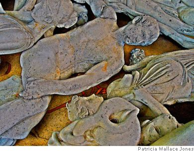

Kevin Andrew Murphy

Ballade of the Bone Collectors
With a rustle of leaves, we hear Autumn has come,
from the crack of the joints to the creak of the boards
as the poplar is bent for a funeral drum
and the patter of limbs like a clatter of swords
as the bonepickers come with their carts and their hoards
of the bones of the dead as they pick through the stones
and they riffle through graves with a rattle of gourds,
with a chatter of teeth and a brattle of bones.
There is frost on the ground, and both primrose and mum
are now withered and blasted for Autumn affords
so few flowers and fruits. Gone is Summer’s ripe plum;
now persimmons and apples all bob from their cords
like the men who’ve been hanged, till the gallows-tree’s wards
all fall down like the apples, kings cast from their thrones,
and the bonepickers catch them, a prize for their lords,
with a chatter of teeth and a brattle of bones.
Fog hangs in the air and the birds have gone dumb
save the hoodie crows croaking as carts cross their swards.
Though their hearts are as cold as their fingers are numb,
all the bonepickers laugh as each tumbrel cart fords
the forked river of life into Death — Sweet rewards
for a duty well done! — and their laughter, its tones
speak of murder and spite, glacial winds from the fjords,
with a chatter of teeth and a brattle of bones.
Hail Orcus, our King! Prince of Gloom! Lord of Glum!
Hail Dread Libitina! Rewards for the drones
are the soulcakes, devoured to every last crumb,
with a chatter of teeth and a brattle of bones.
Native of Silicon Valley, California, Kevin Andrew Murphy is a writer whose fiction has been widely anthologized in the science fiction, fantasy and horror fields. He’s one of the writers for Wild Cards, George R. R. Martin’s superhero shared-world series, returning next year with INSIDE STRAIGHT and then BUSTED FLUSH. He’s also done short stories, novels and games for White Wolf’s World of Darkness and has critical essays in SmartPop’s Seven Seasons of Buffy & Farscape Forever. His poetry has appeared in Midnight Zoo, Light, First Things, The Chimaera, The Shit Creek Review, Hastur Pussycat Kill! Kill! & the print edition of Poets Against The War. His short story “Clove Smoke,” which first appeared in Permission #8 and is now reappearing in The Shit Creek Review, is also currently being turned into a short film in the city of its birth, San Francisco. Kevin is a regular contributor to the group blog http://www.deepgenre.com/ and has a personal website at http://www.sff.net/people/Kevin.A.Murphy.
|